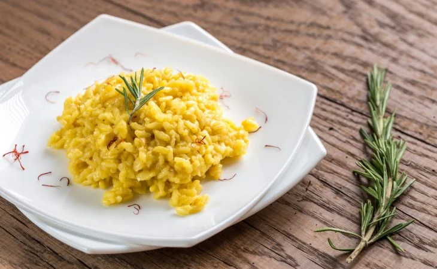

Receita de risoto vegano
Sobre a receita
Experimente o sabor e textura incríveis do nosso risoto vegano! Com ingredientes frescos e sem nenhum produto de origem animal, essa deliciosa receita vai surpreender você e seus convidados. O equilíbrio perfeito entre os vegetais e os temperos, fazem desse prato uma verdadeira obra-prima culinária. Experimente agora mesmo!
Ingredientes
- 1 cebola média picada
- 3 colheres de sopa de azeite
- 1 xícara de chá de arroz arbóreo ou cateto cru
- 1/2 xícara de chá de vinho branco seco
- 3 xícaras de caldo de legumes
- 1/2 xícara de queijo vegano ralado ou requeijão de castanha
- 1 colher de chá de cúrcuma em pó
- 2 colheres de chá de sal
- Alecrim a gosto
- Pimenta-do-reino a gosto
Modo de preparo
- Em uma panela a fogo baixo, coloque o azeite e a cebola para refogar, até que fique transparente.
- Junte o arroz e misture bem.
- Acrescente o vinho e mexa, mantendo o fogo baixo, e deixe dar uma reduzida.
- Em seguida, adicione uma concha de caldo de legumes e misture sempre, para não grudar ao fundo. Quando o líquido estiver quase secando, repita o processo, mexendo sem parar, até que acabe o caldo e o arroz fique
- Tempere com sal, a cúrcuma, o queijo, pimenta-do-reino e alecrim, mexendo bem e constantemente.
- Tampe a panela e deixe cozinhar por uns 2 minutos.
- Agora é só servir! Bom apetite.
Receita original